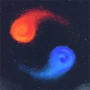
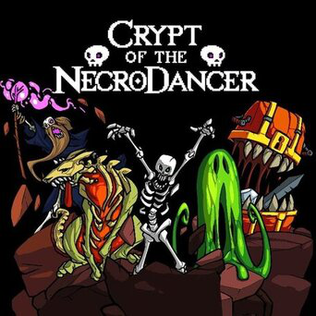
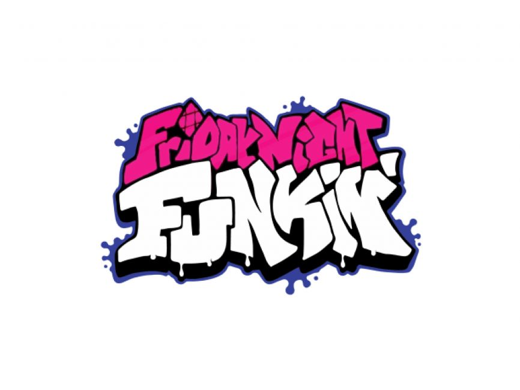
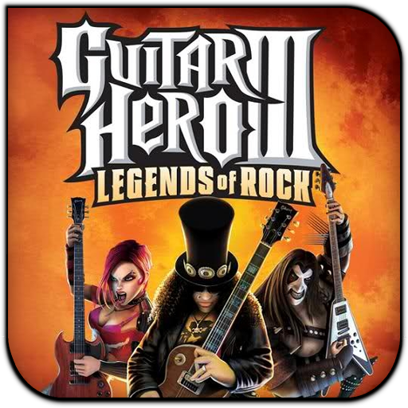
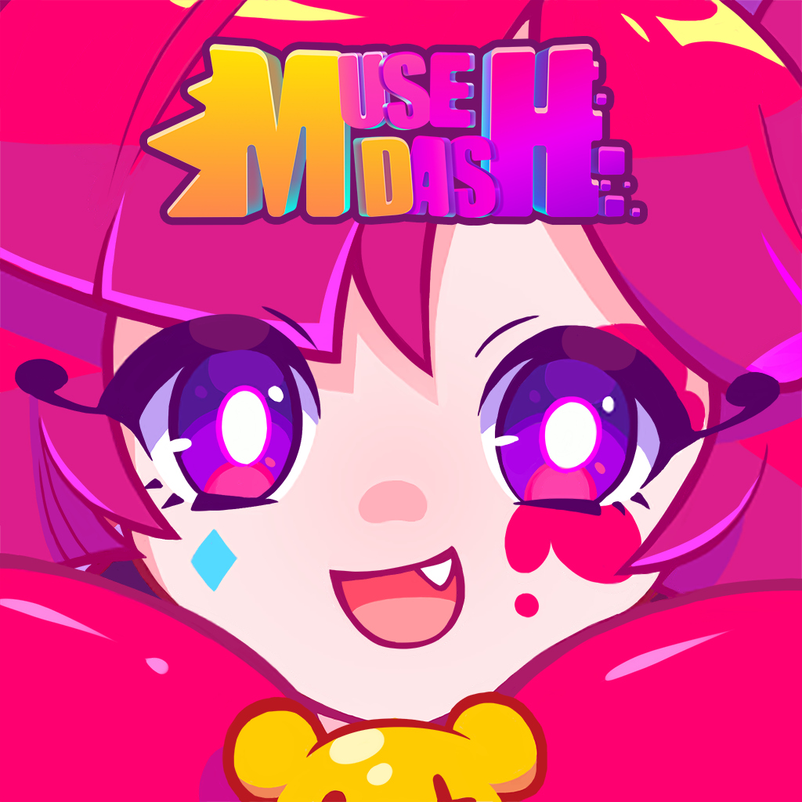

Beneficios de Acordo com a ONU

Jogos de ritmo podem promover a saúde mental e o bem-estar, proporcionando uma forma divertida de relaxar e reduzir o estresse. Eles também podem incentivar a atividade física se combinados com dispositivos de movimento, como em jogos de dança.

Jogos de ritmo podem ser ferramentas educativas eficazes, ajudando no desenvolvimento de habilidades cognitivas, como a coordenação motora, tempo de reação e memória. Eles também podem ser usados para ensinar música e ritmo de uma forma interativa e envolvente.
.jpg)
Jogos de ritmo, como muitos jogos digitais, podem ser acessíveis a uma ampla gama de pessoas, independentemente de sua localização geográfica, econômica ou social. Isso pode ajudar a reduzir desigualdades ao proporcionar acesso igualitário a oportunidades de lazer e educação.
Eu sempre amei jogos, independete do genero, mas um que me pegou bastante são jogos de ritmos, muitas pessoas devem achar algo muito nada ver, pois só são jogos que tem que clicar no tempo certo, que tem musicas e mais nada, só que tem coisas muito profundas sobre esse tipo de jogos, eles não podem ter historia para cativar o jogador ou uma gameplay diferente que faça ser um jogo unico, mas para mim, eu acho uma categoria perfeita, por fazer ficar querendo sempre melhorar e ter mais precisão nos acertos das notas, conseguindo ter uma coordenação motora melhorar, alem que as musicas muitas vezes são relaxantes, sempre que quero relaxar passar um tempo, gosto de ligar o computador iniciar algum jogo de ritmo, colocar uma musica legalzinha e dificil e tentar cada vez melhorar.
Jogos de ritmo são um gênero de videogame em que o principal desafio é sincronizar as ações do jogador com a batida da música ou com elementos sonoros específicos. Esses jogos testam a capacidade do jogador de seguir padrões musicais, coordenar movimentos e reagir rapidamente a estímulos visuais e auditivos. Suas principais caracteristicas são: Interação Musical: A principal mecânica de jogo envolve interações que devem ser realizadas no tempo certo, seguindo o ritmo de uma música. Estas interações podem incluir pressionar botões, tocar na tela, movimentar um controle ou até mesmo dançar. Padrões Visuais e Auditivos: Os jogos de ritmo geralmente apresentam padrões visuais, como notas ou ícones que se movem pela tela, indicando quando o jogador deve realizar uma ação. Esses padrões são sincronizados com a música de fundo, criando uma experiência imersiva onde visão e audição trabalham juntas. Feedback Imediato: Os jogadores recebem feedback imediato sobre seu desempenho, com avaliações que podem variar de "Perfeito" a "Errado", dependendo da precisão do tempo da ação. Níveis de Dificuldade: Muitos jogos de ritmo oferecem diferentes níveis de dificuldade, permitindo que jogadores de várias habilidades possam desfrutar do jogo e melhorar com a prática.